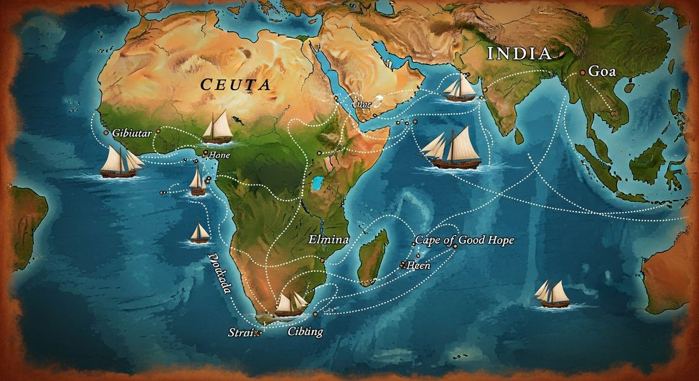
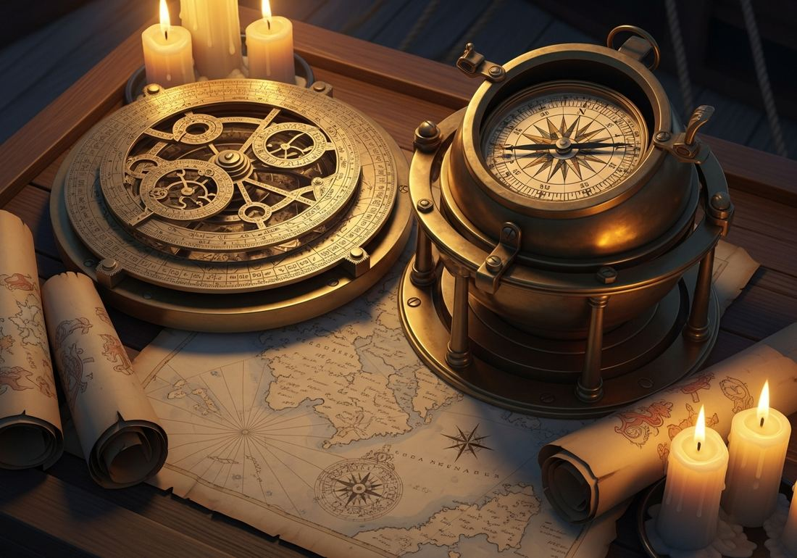

4.1 Technological Innovations from 1450 to 1750
- LO-A: Cross-cultural origins: European maritime technology was not invented in Europe. The magnetic compass originated in China and reached Europe through Arab transmitters. The lateen sail came from Indian Ocean and Arab sailors. Astronomical charts and the astrolabe were refined by Islamic scholars building on Classical Greek knowledge. European sailors assembled these borrowed tools into a coherent system that made ocean crossing possible. The ships: Three designs drove the Age of Exploration. The caravel (Portuguese, c. 1440s) was small and maneuverable with triangular lateen sails allowing it to sail into the wind, perfect for exploring unknown coastlines. The carrack was larger, with multiple masts and a deep hold for long ocean voyages. The Dutch fluyt (1590s) was optimized purely for cargo profit, cheaper to operate than anything before it, which is why Dutch merchants came to dominate global trade. Navigation tools: The magnetic compass gave sailors direction. The astrolabe (and later the cross-staff) let sailors determine their latitude by measuring the angle of the sun or North Star above the horizon. Portolan charts mapped known coastlines. Together, these tools let sailors know where they were heading, how far north or south they were, and what coast was ahead, making open-ocean voyaging survivable. Wind patterns: Understanding the trade winds (steady tropical winds blowing westward toward the Americas) and the westerlies (returning winds blowing east across the North Atlantic and South Atlantic) was as important as any physical tool. Columbus used the trade winds going west; the Portuguese used the volta do mar (the great arc swing into the Atlantic) to catch westerlies home. Without this knowledge, ships could go out but not come back.
Try each question before revealing the answer.
1. Why would a triangular lateen sail allow a ship to sail into the wind, while a traditional square sail could not?
2. The magnetic compass was invented in China around 1000 CE. How did it reach European sailors by the 1400s, and why does this matter for understanding European exploration?
3. How does understanding wind patterns function as a technology, even though it's just knowledge rather than a physical tool?
4. The Dutch fluyt (1590s) was described by contemporaries as the most economical ship ever built for cargo transport. Why would a ship that maximized cargo efficiency matter for global trade more than a ship that was the fastest or most powerful?
5. European navigators of the 1400s could not determine their longitude (east-west position) at sea, only their latitude (north-south position). How did this limitation shape the patterns of early European exploration?
- Explain how cross-cultural interactions resulted in the diffusion of technology and facilitated changes in patterns of trade and travel from 1450 to 1750
Tap a term for its definition.
-
Definition: A small, fast Portuguese sailing ship developed in the 1440s–1450s, featuring triangular lateen sails and a shallow draft allowing navigation in coastal waters. Significance: the primary vessel of early Portuguese exploration down the African coast and across the Atlantic. Its maneuverability made it ideal for exploring unknown coastlines.
-
Definition: A large, multi-masted sailing vessel with a deep cargo hold, designed for long ocean voyages; a successor to the caravel for transoceanic trade. Significance: used for the major transoceanic voyages including Vasco da Gama's voyage to India and Columbus's later voyages. Could carry far more cargo than the caravel.
-
Definition: A Dutch cargo vessel developed in the 1590s, designed with a large cargo hold, narrow upper deck, and requiring a small crew, optimized for commercial efficiency. Significance: helped make the Dutch the dominant maritime trading power of the 17th century by dramatically reducing the per-unit cost of transporting goods across oceans.
-
Definition: A triangular sail mounted on a tilted (angled) yard, allowing the sail to be angled to the wind; enables sailing into the wind by tacking. Significance: originated with Arab and Indian Ocean sailors; adopted by Portuguese caravel builders; the key innovation that made it possible for ships to sail against the wind and therefore return home from long ocean voyages.
-
Definition: A navigational instrument using a magnetized needle that aligns with Earth's magnetic field to indicate direction. Significance: originated in China (c. 1000 CE), transmitted to Europe through Islamic scholars and Arab traders. Allowed sailors to maintain direction even when clouds obscured the sun and stars.
-
Definition: A navigational instrument used to determine latitude by measuring the angle of the sun or stars above the horizon. Significance: Refined by Islamic astronomers from Classical Greek designs; adopted by Portuguese navigators. Allowed sailors to calculate their north-south position (latitude) at sea, essential for open-ocean navigation.
-
Definition: Steady tropical winds that blow westward toward the Americas and the Caribbean from the coasts of Europe and Africa at roughly 10–30° latitude. Significance: The wind pattern Columbus exploited to reach the Americas; understanding the trade winds made the Atlantic crossing reliable and repeatable.
-
Definition: A detailed navigational chart depicting coastlines, ports, and compass directions, developed by Mediterranean sailors in the 13th–15th centuries. Significance: Early example of "astronomical charts"; gave navigators accurate maps of known coastlines to navigate by landmarks before reliable open-ocean navigation was possible.
⚙️ The Problem Europe Needed to Solve
By 1400, European merchants knew one thing with absolute certainty: Asian goods, Chinese silk, Indian spices, Persian dyes, Southeast Asian pepper, were worth fortunes in European markets. A sack of pepper bought in Alexandria cost five times what the same pepper was worth in Calicut, India. The markup was entirely captured by Arab, Ottoman, and Venetian middlemen who controlled the overland routes across Central Asia and the sea lanes through the Red Sea.
If Europe could reach Asia directly by sea, bypassing those middlemen entirely, the profits would be staggering. The problem was that no one had successfully done it. The Atlantic Ocean was unknown territory. Africa seemed endless. The technology for navigating unknown open ocean simply didn't exist in Europe yet, ships couldn't stay oriented at sea without landmarks, couldn't sail against the wind to return home, and weren't strong enough for months-long voyages.
What followed between roughly 1400 and 1500 was an intensive period of technological borrowing, adaptation, and experimentation. European, especially Portuguese, navigators assembled a toolkit from multiple civilizations that solved each of these problems one by one.

Image credit not specified.
Portuguese explorers methodically worked their way down the African coast across the 15th century, each voyage extending knowledge of winds, currents, and coastlines. AI-generated illustration (Google Gemini, 2025), commercially licensed.
⛵ The Ships That Changed Everything
Ship design was the most fundamental technology, because without a vessel capable of sustained ocean travel, no amount of navigational knowledge mattered. Three ship designs define the period:
The Caravel (Portuguese, developed c. 1440s–1450s) was the breakthrough ship of early exploration. It was relatively small, about 50–75 feet long, but revolutionary in design. Its most important feature was the combination of lateen sails (triangular sails that could be angled to catch wind from the side) with a shallow draft allowing navigation in coastal and river waters. The caravel could sail into the wind by tacking, zigzagging at angles, rather than waiting for a favorable wind. This meant it could go out and, crucially, come back. Vasco da Gama's first voyage to India and Bartolomeu Dias's rounding of the Cape of Good Hope were made possible by the caravel.
The Carrack was the larger successor to the caravel, used for major transoceanic trade voyages. Where the caravel was fast and maneuverable, the carrack was capacious, with multiple masts (typically three), high forecastles and sterncastles for defense, and a deep cargo hold that could carry months of food and water plus valuable trade goods. Columbus's flagship, the Santa María, was a carrack. So was Vasco da Gama's lead ship. Carracks took the exploratory routes opened by caravels and turned them into commercial highways.
The Fluyt (Dutch, developed 1590s) came later but had the most transformative commercial impact. The fluyt was unglamorous, no guns, no high castles, just a very large, very efficient cargo hold with a narrow upper deck that reduced the crew required to operate it. Fewer sailors meant lower wage costs. More cargo meant higher revenue. This meant Dutch merchants could profitably carry the same goods across the same routes at lower prices than any competitor. Within decades of the fluyt's development, the Dutch East India Company was handling more ocean trade than all other European powers combined.
🧭 Navigation Tools: Knowing Where You Are

Image credit not specified.
Ships alone weren't enough. Without knowing where they were on the open ocean, sailors couldn't reach a target destination or return home safely. Three navigation tools solved this problem:
The Magnetic Compass gave sailors reliable direction, which way was north, regardless of whether they could see the sun or stars. This was transformative because fog, clouds, and storms could make celestial navigation impossible for days at a time. The compass originated in China around 1000 CE, where it was initially used for geomancy (feng shui). It reached the Arab world through trade contacts, where Islamic scientists adapted it for maritime navigation, and from there it entered European use around 1200 CE. By the 1400s, it was standard equipment on every European vessel attempting ocean exploration.
The Astrolabe (and its simpler successor, the cross-staff) allowed sailors to determine their latitude, their north-south position on Earth, by measuring the angle of the sun at noon or the North Star at night above the horizon. The astrolabe was refined by Islamic astronomers in the 9th–13th centuries building on Classical Greek astronomical knowledge. Portuguese navigators adopted it in the 1480s–1490s, which is when ocean exploration became reliably possible rather than dangerously speculative. Knowing your latitude meant you could "sail to the right height on the globe" and then turn east or west toward your destination.
Portolan Charts were highly detailed maps of coastlines, ports, harbors, and compass bearings developed by Mediterranean sailors from the 13th century onward. They were extraordinarily accurate for known coastlines and gave navigators a visual record of where they'd been that could be shared and improved over successive voyages. Each expedition added new coastline knowledge to the charts, building a cumulative picture of the world's geography that made subsequent voyages safer.
💨 Wind Patterns: The Invisible Highway
Even with good ships and navigation tools, ocean exploration required one more piece of knowledge: understanding the wind. The Atlantic is not windless. It has predictable, seasonally reliable wind systems that, once understood, could be used like highways.
- Trade winds: At tropical latitudes (roughly 10–30°N and S), steady winds blow reliably westward toward the Americas. Columbus knew this, he sailed south to the Canary Islands (at roughly 28°N latitude) before turning west on the trade winds in October 1492. He reached the Caribbean in 33 days.
- The Westerlies: At higher latitudes (roughly 30–60°N and S), winds blow reliably eastward. These are the winds that blow sailing ships back across the Atlantic from the Americas to Europe. Columbus used them on his return, sailing north before turning east.
- The volta do mar: Portuguese navigators discovered that to return from West Africa, they had to sail far out into the Atlantic to catch favorable northerly winds, a counterintuitive but essential insight. This "Atlantic swing" became standard operating procedure and was the key to reliable round-trip voyaging.
🌍 The Cross-Cultural Origins of It All
Here is the essential AP World History insight about this topic: European maritime dominance was built on borrowed technology. The College Board explicitly states that knowledge from the Classical, Islamic, and Asian worlds spread to facilitate European technological development. Let's make this concrete:
- From China: The magnetic compass (c. 1000 CE), transmitted westward through the Islamic world to Europe over several centuries.
- From the Islamic world: The astrolabe, refined and perfected by Islamic astronomers; the lateen sail, used by Arab sailors in the Indian Ocean and Red Sea for centuries; astronomical charts recording star positions and wind patterns compiled by Muslim geographers; and the mathematical knowledge needed to calculate latitude from celestial observations.
- From Classical Antiquity: The astronomical knowledge of Greek scholars like Ptolemy and Eratosthenes (who calculated Earth's circumference in 240 BCE) formed the foundation that Islamic scholars built on, and that European navigators eventually accessed through Arabic translations.
- European innovation: The specific ship designs (caravel, carrack, fluyt) were European syntheses, taking the lateen sail from Arab sailors, combining it with European hull construction techniques, and producing vessels optimized for Atlantic conditions. The Portuguese systematized the process of testing, recording, and improving navigation knowledge over generations of state-sponsored expeditions.
These videos will help you review Technological Innovations from 1450 to 1750 and solidify key concepts before your exam.
- A) The development of transoceanic trade networks by allowing ships to carry larger cargo loads
- B) The decline of Ottoman control over Indian Ocean trade routes
- C) The replacement of overland Silk Road trade by making Mediterranean trade more efficient
- D) The systematic European exploration of the African coastline and eventually the discovery of sea routes to Asia
- A) The dominance of Chinese technology in the pre-modern world
- B) How cross-cultural commercial interactions spread technologies across civilizations, enabling subsequent innovations
- C) The deliberate effort by Arab scholars to share Chinese knowledge with European competitors
- D) The superiority of Islamic scientific methods over European ones in the medieval period
- A) How the discovery of Atlantic wind patterns was essential to making round-trip transoceanic voyaging reliable
- B) The limitations of the magnetic compass for open-ocean navigation
- C) The superiority of Portuguese caravel design over competing European vessels
- D) European competition with the Ottoman Empire for control of the Atlantic trade winds
- A) Dutch military dominance over Portuguese and Spanish naval forces in the Atlantic
- B) The Dutch preference for protecting trading partners rather than establishing colonial empires
- C) The Dutch ability to undercut competitors in global trading networks by reducing transportation costs
- D) The decline of the caravel as a viable exploration vessel after 1600
- A) European explorers were dependent on Islamic political cooperation for their navigational knowledge
- B) Islamic scholars deliberately shared their navigational secrets with European rivals to promote peaceful trade
- C) Greek astronomical knowledge was superior to all subsequent developments by Islamic and European scholars
- D) Scientific knowledge was cumulative and cross-cultural, with each civilization building on the preserved and improved knowledge of predecessors
Answer all three parts. Write your response before clicking to see sample answers.
Part A
Identify ONE technology from a non-European source that contributed to European maritime expansion in the period 1450–1750, and explain its origin.
Part B
Explain ONE way that innovations in ship design made transoceanic trade and exploration more viable in the period 1450–1750.
Part C
Explain how the diffusion of navigational technology reflects a broader pattern of cross-cultural exchange in the period 1450–1750.
Write a thesis before revealing. A strong thesis quantifies the extent ("to a significant degree"), identifies the mechanism, and previews two arguments.